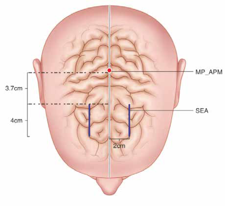

Cũng có những trường hợp tương tự trong các văn bản ra đời sau Hoàng Đế Nội Kinh: danh y Trương Trọng Cảnh (Zhongjing Zhang) đời Hán, trong Kim Quỹ Ngọc Hàm Kinh quyển một (金匮玉函经-卷一), viết:
«Đầu là người đứng đầu cơ thể, chứa đựng thần.» Nguyên văn: "The head, the leader of the body, stores the spirit".
Thêm vào đó, danh y Tôn Tư Mạc (Simiao Sun) trong bộ nổi tiếng Bị Cấp Thiên Kim Yếu Phương (Beiji Qianjin Yaofang, hay Emergency Prescriptions Worth a Thousand Gold, 备急千金要方-卷八十九) cũng trình bày một cách hiểu tương tự.
Từ đời Minh trở đi, ngày càng nhiều thầy thuốc chú ý đến não như chỗ ngồi thực sự của thần, từ đó thần thống nhiếp các thần khác. Một thí dụ điển hình: Chu Túc (Su Zhu, 朱橚) cùng các đồng sự trong Phổ Tế Phương (Pu Ji Fang, hay Prescriptions for Universal Relief, 普济方-卷一方脉总论, 1390) viết:
«Não là biển của tủy. Đầu là nơi hội tụ của mọi kinh dương. Thượng đan điền được lập nên ở Nê Hoàn (Ni Wan, "viên bùn"). Mọi thần đều tụ ở trong đầu, mà đầu là người đứng đầu cơ thể.» Nguyên văn: "The Brain is the sea of marrow. The head is the meeting of all Yang channels. The Upper Dantian is created in the Ni Wan (Mud ball). All the Shen gather inside the head, which is the leader of the body".
Về sau trong đời Minh, Dụ Gia Ngôn (Jiayan Yu) trong tác phẩm năm 1643 Ngụ Ý Thảo (Yu Yi Cao, hay Implied Meaning Cases, 寓意草) viết:
«Đầu là người đứng đầu cơ thể, nằm ở vòm cao nhất. Nó trông coi các tạng nhưng không phụng sự chúng. Dẫu mắt thông tới Can, tai thông tới Thận, mũi thông tới Phế, miệng thông tới Tỳ và lưỡi thông tới Tâm, thì đó chỉ là mượn làm cửa ngõ, chứ không phải chúng khống chế các tạng. Chính tủy não ở trong đầu mới điều khiển chúng. Não là biển của tủy.»
Nguyên văn: "The head is the leader of the body, located on the top dome. It supervises the Zang organs but does not wait on them. Although eyes reach the Liver, ears reach the Kidney, nose reaches the Lung, mouth reaches the Spleen and tongue reaches the Heart, they are borrowed as portals but do not control them. It is the Brain marrow which is in the head that controls them. The brain is the sea of marrow."

Dụ cũng đồng ý rằng não là nơi tụ họp của mọi thần:
«Đầu, người đứng đầu cơ thể, chứa đựng các thần. Nó làm chủ khí và huyết, thần và tủy, kinh và lạc, cũng là nơi dương khí quy tụ.» Nguyên văn: "The head, leader of the body, stores the spirits. It controls Qi and Blood, Mind and Marrows, channels and collaterals, and is also where the Yang Qi converges".
Chú thích người dịch: (1) Bản in có «Master Han dynasty doctor Zhongjing Zhang in in his book» — lặp từ «in»; và «from which is governs the other shen» — sai ngữ pháp. Bản dịch Việt hiệu đính nhẹ hai lỗi này, còn Phụ lục nguyên bản tiếng Anh giữ nguyên để đối chiếu. (2) «Su Zhu (朱橚)» là cách ghi đảo thứ tự họ–tên; bản dịch Việt dùng «Chu Túc» và giữ «Su Zhu» trong ngoặc. (3) Chú thích ảnh «Spirit emotion area» nằm chèn ngang ngay giữa câu «The brain is the sea» / «of marrow.» của bản in bốn cột; bản dịch đã nối lại thành «Não là biển của tủy» và đưa chú thích xuống phần hình.
Nguồn: Tianjun Wang, Shen, yuan shen & the brain, Acu. số 31, Summer 2021, chuyên mục Practice, tr. 12. Bản dịch tiếng Việt toàn văn, giữ nguyên mạch lập luận của bài in.